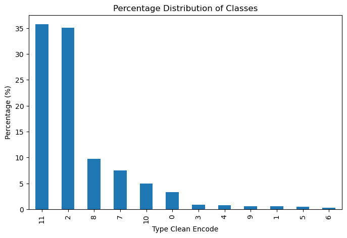
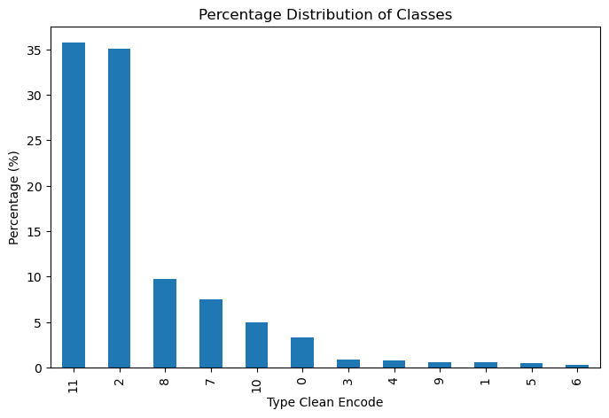

Test and Verification Results
Technical Note D4
Executive summary
This technical note presents the results from the modelling work specified in technical note “Technical Note D2 - Algorithm Design and Theoretical Basis Description” for both the morphometric and AI models. The first section “Morphometric classification” focuses on the morphometric prediction pipeline, its results accuracies and examples and introduces two extensions to the experiment design - an additional dataset and two new models that are evaluated. Similarly, the second section “Test and Verification Results: AI Model” describes the extensions and changes from the design specification and the results of the space-time modelling. This note ends with a conclusion section that brings together the two sets of results and discusses the limitations of the project. In summary, we are able to achieve high acuracies at multiple resolutions - at the building level for the morphometric model, and at the 250 metre grid cell resolution for the AI model. And that these results show that it is possible to use alternative data sources to characterize urban fort at scale, while preserving detail that is currently not captured by other large urban descriptors.
Morphometric classification
This section presents the results of the morphometric analysis described in “Technical Note 2 - Algorithm Design”.
| Level 1 | Level 2 | Level 3 | Level 4 |
|---|---|---|---|
| Traditional Street Network | Central Urban Developments | Central Urban Developments | Dense Connected Developments |
| Large Interconnected Blocks | |||
| Traditional Urban Developments | Dense Urban Developments | Dense Standalone Buildings | |
| Compact Development | |||
| Street-aligned Developments | Aligned Winding Streets | ||
| Cul-de-Sac Layout | |||
| Utilitarian Street Network | Utalitarian street network | Large Scale Developments | Large Utilitarian Development |
| Extensive Wide-Spaced Developments | |||
| Sparse Road Network Developments | Sparse Open Layout | ||
| Sparse Road-Linked Development | |||
| Linear & Rural Development | Linear Road Network Developments | Dispersed Linear Development | |
| Linear Development | |||
| Sparse Rural Development | Sparse Rural Development |
The taxonomy of ground truth classes is presented in Table 1 and all subsequent analysis focuses on Levels 3 and 4. There is an interactive map of the taxonomy available at https://uscuni.org/himoc/ . More detail abut
We have made two changes to the methodoly presented in “Technical Note 2 - Algorithm Design”, which are outside of the original scope of the project.
First, we train two additional models per ground truth hierarchical (taxonometric) level - a global random model and a global spatially explicit model. This is done to highlight the effects of spatial lag in model training and testing, as well as the ability of the models to generalise from one context to another. Figure 1 shows the new train / test splits.
The second change is that we repeat all experiments with a new data set based on Overture Data. However, the experiment is done to demonstrate that the morphological pipeline can handle more detailed, but heterogenous data, which may lead to better predictions. Furthermore, the Overture data is easily accessable for numerous regions across the world and significantly increases our pipeline’s generalisibility. Figure 2 shows a comparison between the datasets.
Results
| Random | Spatial | SK | PL | DE | AT | CZ | |
|---|---|---|---|---|---|---|---|
| Aligned Winding Streets | 1,308 | 1,312 | 474 | 406 | 5,219 | 245 | 195 |
| Compact Development | 1,067 | 1,083 | 160 | 75 | 5,041 | 33 | 23 |
| Cul-de-Sac Layout | 1,023 | 1,027 | 358 | 400 | 3,798 | 344 | 212 |
| Dense Connected Developments | 735 | 750 | 92 | 268 | 2,971 | 138 | 207 |
| Dense Standalone Buildings | 818 | 785 | 273 | 1,224 | 1,899 | 358 | 338 |
| Dispersed Linear Development | 136 | 133 | 36 | 613 | 31 | 0 | 2 |
| Extensive Wide-Spaced Developments | 113 | 104 | 26 | 329 | 130 | 20 | 61 |
| Large Interconnected Blocks | 36 | 33 | 3 | 8 | 138 | 21 | 11 |
| Large Utilitarian Development | 133 | 131 | 11 | 134 | 429 | 43 | 46 |
| Linear Development | 391 | 396 | 139 | 1,526 | 254 | 11 | 27 |
| Sparse Open Layout | 1,626 | 1,621 | 59 | 3,744 | 1,486 | 1,319 | 1,521 |
| Sparse Road-Linked Development | 1,095 | 1,065 | 428 | 1,697 | 3,005 | 177 | 169 |
| Sparse Rural Development | 562 | 540 | 30 | 2,483 | 65 | 132 | 101 |
| Total | 9,049 | 8,987 | 2,095 | 12,913 | 24,473 | 2,846 | 2,919 |
| Random | Spatial | SK | PL | DE | AT | CZ | |
|---|---|---|---|---|---|---|---|
| Aligned Winding Streets | 1,906 | 1,911 | 602 | 593 | 7,681 | 334 | 320 |
| Compact Development | 1,632 | 1,646 | 201 | 127 | 7,708 | 75 | 48 |
| Cul-de-Sac Layout | 1,354 | 1,362 | 446 | 484 | 5,152 | 429 | 260 |
| Dense Connected Developments | 1,850 | 1,843 | 157 | 662 | 7,494 | 262 | 676 |
| Dense Standalone Buildings | 1,062 | 1,073 | 324 | 1,540 | 2,524 | 465 | 454 |
| Dispersed Linear Development | 163 | 167 | 40 | 740 | 35 | 0 | 3 |
| Extensive Wide-Spaced Developments | 175 | 186 | 63 | 468 | 215 | 35 | 94 |
| Large Interconnected Blocks | 216 | 218 | 11 | 45 | 872 | 82 | 70 |
| Large Utilitarian Development | 184 | 178 | 15 | 163 | 632 | 55 | 57 |
| Linear Development | 468 | 464 | 173 | 1,797 | 320 | 11 | 41 |
| Sparse Open Layout | 1,924 | 1,901 | 65 | 4,353 | 1,927 | 1,498 | 1,777 |
| Sparse Road-Linked Development | 1,387 | 1,377 | 531 | 2,045 | 3,921 | 226 | 213 |
| Sparse Rural Development | 639 | 643 | 42 | 2,811 | 82 | 150 | 108 |
| Total | 12,966 | 12,974 | 2,675 | 15,832 | 38,570 | 3,627 | 4,127 |
Since the different test cases are derived from different underlying data, the results are interpreted with that in mind. The test data distribution and source in the MS models is different than the test data in Overture Models - less volumous, much less detailed and overall different in character. Table Table 2 shows the differences in distribution per Level 4 cluster with the table values reporting the thousands of instances of a particular class. The distribution will be similar for level 3 clusters, as they are aggregates of Level 4.
The differences in Large Interconnected Blocks and Dense Connected Developments between Table 2 (b) and Table 2 (a) highlight that there are a lot less instances of buildings in dense central urban areas, since the extraction method in the MS case groups many of them together or completely discards them. However, in all cases, apart from Germany, as a percentage of the total test cases, these classes are low and therefore even high improvements in predicting these specific classes affect the overall reported accuracy relatively little. The weighted macro F1 score reported in the results in subsequent sections somewhat adresses the issue, but it accounts better for poor performance, rather than highlighting improvements. If the models perform poorly on a class that appears few times in the test data, then the weighted F1 score weights its specific score less than other classes that appear more frequently. The macro F1 score weights the classes equially, so better performance in a class that doesnt appear often increases the overall score relatively more. However, poorer performance for another class due to the test case distribution or problems with the microsoft buildings extraction algorithm counters this. For these reasons we extend our analysis to the individual classes and do not just look at the aggregate F1 scores.
Nevertheless, the attached target labels come from the same source for both types of models and reflects a ground truth independent of these data issues. The detailed class by class f1 scores highlight what is possible to detect with a specific datasets. Therefore, a high score means that a correct classification is more likely given all of the issues with the underlying data.
Level 3
Aggregate scores
| Random | Spatial | OoS | SK | PL | DE | AT | CZ | |
|---|---|---|---|---|---|---|---|---|
| Weighted F1 | 0.74 | 0.66 | 0.59 | 0.54 | 0.60 | 0.59 | 0.63 | 0.56 |
| Micro F1 | 0.74 | 0.65 | 0.57 | 0.53 | 0.61 | 0.58 | 0.62 | 0.53 |
| Macro F1 | 0.73 | 0.63 | 0.48 | 0.45 | 0.54 | 0.47 | 0.49 | 0.45 |
| Random | Spatial | OoS | SK | PL | DE | AT | CZ | |
|---|---|---|---|---|---|---|---|---|
| Weighted F1 | 0.74 | 0.66 | 0.59 | 0.51 | 0.61 | 0.62 | 0.65 | 0.59 |
| Micro F1 | 0.74 | 0.66 | 0.58 | 0.50 | 0.61 | 0.61 | 0.63 | 0.56 |
| Macro F1 | 0.74 | 0.64 | 0.50 | 0.46 | 0.57 | 0.49 | 0.53 | 0.47 |
Table 3 shows the aggregate F1 scores for the level 3 models trained on the Microsoft Building footprint and Overturemaps building footprints data. The Random, column shows the F1 scores for the model tested on randomly selected stratified data; Spatial - on the spatially aware split; OoS - stands for “Out of Sample” and is the average of the models, tested on each individual country and trained on the rest; the other columns are the specific F1 scores for each country, that make up the OoS. There are three main patterns present in the reported results.
First, overall the aggregate scores between the models trained on the two datasets are almost equal. with the Overturemaps models being very slightly higher. This suggests that at this level of disagregation of urban form, detailed characteristics of building footprints and their interactions with each other and the street network matter less. For example, the Overture data has more accurate information of building corners, adjacency, orientation and others but that does not significantly improve the overall F1 scores.
Second, more complex and relfective of the underlying phenomena testing splits result in more realistic model evaluations for both sub-tables. The Random split has the highest score, the spatial split is always lower and the OoS average lower still. OoS is the closest score to a realistic real-world application of the model - using it to predict unseen urban fabric types. The fact that the Spatial score is closer to it, shows that randomly spliting your modelling data leads to spatial leakage and spatially aware-splits result in more realistic evaluations. Nevertheless, the Out of Sample score is lower still, which suggests that even testing the model accuracy on spatially split data overestimates model performance.
Third, even at this high level of aggregation urban form shows signs of heterogeneity. The F1 scores for the individual countries vary both Overture and Microsoft trained models, but especially in Table 3 (a). The scores for Slovakia are especially lower suggesting that it represents a more distinct type of morphology, whereas the scores for Austria are the highest suggesting that it is more similar on average to Central Europe as a whole.
Class scores
| Random | Spatial | OoS | SK | PL | DE | AT | CZ | |
|---|---|---|---|---|---|---|---|---|
| Central Urban Developments | 0.62 | 0.56 | 0.46 | 0.37 | 0.45 | 0.51 | 0.50 | 0.47 |
| Dense Urban Developments | 0.73 | 0.67 | 0.65 | 0.64 | 0.70 | 0.64 | 0.66 | 0.62 |
| Large Scale Developments | 0.54 | 0.46 | 0.42 | 0.34 | 0.55 | 0.37 | 0.39 | 0.42 |
| Linear Road Network Developments | 0.87 | 0.67 | 0.36 | 0.45 | 0.59 | 0.36 | 0.20 | 0.20 |
| Sparse Road Network Developments | 0.79 | 0.71 | 0.64 | 0.52 | 0.70 | 0.61 | 0.73 | 0.64 |
| Sparse Rural Development | 0.87 | 0.71 | 0.38 | 0.31 | 0.46 | 0.18 | 0.47 | 0.47 |
| Street-aligned Developments | 0.70 | 0.63 | 0.46 | 0.56 | 0.33 | 0.59 | 0.49 | 0.32 |
| Random | Spatial | OoS | SK | PL | DE | AT | CZ | |
|---|---|---|---|---|---|---|---|---|
| Central Urban Developments | 0.74 | 0.69 | 0.59 | 0.41 | 0.62 | 0.67 | 0.65 | 0.62 |
| Dense Urban Developments | 0.72 | 0.67 | 0.65 | 0.64 | 0.69 | 0.64 | 0.66 | 0.63 |
| Large Scale Developments | 0.54 | 0.45 | 0.40 | 0.36 | 0.55 | 0.36 | 0.38 | 0.34 |
| Linear Road Network Developments | 0.86 | 0.66 | 0.38 | 0.46 | 0.60 | 0.36 | 0.26 | 0.23 |
| Sparse Road Network Developments | 0.78 | 0.70 | 0.64 | 0.49 | 0.69 | 0.60 | 0.73 | 0.67 |
| Sparse Rural Development | 0.85 | 0.71 | 0.39 | 0.36 | 0.47 | 0.16 | 0.51 | 0.47 |
| Street-aligned Developments | 0.69 | 0.62 | 0.46 | 0.49 | 0.35 | 0.60 | 0.51 | 0.35 |
Table 4 shows the F1 scores broken down by prediction class for the level 3 models. The sub-tables and columns have the same interpretation as Table 3.
The differences in F1 scores across classes shows that some types of urban form is easier to predict that others. Dense Urban Developments has the highest score, whereas Sparse Rural Development the lowest.
The patterns in the individual classes between sub-tables Table 4 (a) and Table 4 (b) are mostly identical to patterns in the aggregated results. The scores for individual classes are similar, with the overture data performing very slightly better. The exception is the Central Urban Developments class, which is reflective of the higher quality in the Overture dataset. The higher prediction accuracy for this cluster does not significantly impact the overall F1 scores in Table 3 (b), since it is relatively sparse compared to the rest of the classes. Furthermore, the same patterns in f1 scores hold across the train / test schemes : Random is the highest; Spatial is lower, OoS lowest. Lastly, the heterogeneity of urban form between countries and across detailed classes is even more pronounced , as evidenced by the even larger differences in F1 scores between the country specific models countries.
Level 4
Aggregate scores
| Random | Spatial | OoS | SK | PL | DE | AT | CZ | |
|---|---|---|---|---|---|---|---|---|
| Weighted F1 | 0.59 | 0.52 | 0.38 | 0.38 | 0.42 | 0.36 | 0.44 | 0.29 |
| Micro F1 | 0.59 | 0.52 | 0.37 | 0.38 | 0.42 | 0.37 | 0.40 | 0.28 |
| Macro F1 | 0.59 | 0.49 | 0.30 | 0.30 | 0.35 | 0.31 | 0.30 | 0.26 |
| Random | Spatial | OoS | SK | PL | DE | AT | CZ | |
|---|---|---|---|---|---|---|---|---|
| Weighted F1 | 0.70 | 0.55 | 0.41 | 0.35 | 0.43 | 0.41 | 0.49 | 0.39 |
| Micro F1 | 0.70 | 0.54 | 0.40 | 0.34 | 0.43 | 0.41 | 0.46 | 0.36 |
| Macro F1 | 0.71 | 0.54 | 0.34 | 0.30 | 0.38 | 0.35 | 0.36 | 0.32 |
Table 5 shows the overall F1 scores for the Level 4 prediction models.
First, overall the scores in Table 5 are lower than the scores in Table 3 across all models. This shows that the prediction task becomes more difficult as we move down the ground truth taxonomy.
Second, Table 5 (b) mostly has higher values than Table 5 (a) across all models, suggesting that as the detail of the target clusters increases, so does the importance of the building footprints quality.
Third, heterogeinety of urban form is more prominent as evidenced by the relatively larger differences in f1 scores between the country specific models.
Fourth, the same pattern of spatial leakege is present as in Table 3. As the complexity of the spatial splitting schemes increase to match the underlying phenomena, the f1 scores decrease.
Class scores
| Random | Spatial | OoS | SK | PL | DE | AT | CZ | |
|---|---|---|---|---|---|---|---|---|
| Aligned Winding Streets | 0.51 | 0.45 | 0.28 | 0.35 | 0.21 | 0.36 | 0.28 | 0.18 |
| Compact Development | 0.59 | 0.55 | 0.13 | 0.15 | 0.09 | 0.24 | 0.09 | 0.08 |
| Cul-de-Sac Layout | 0.57 | 0.52 | 0.43 | 0.52 | 0.31 | 0.52 | 0.47 | 0.32 |
| Dense Connected Developments | 0.50 | 0.46 | 0.33 | 0.29 | 0.29 | 0.45 | 0.33 | 0.29 |
| Dense Standalone Buildings | 0.63 | 0.56 | 0.54 | 0.53 | 0.65 | 0.38 | 0.55 | 0.57 |
| Dispersed Linear Development | 0.91 | 0.64 | 0.19 | 0.17 | 0.34 | 0.18 | 0.06 | 0.18 |
| Extensive Wide-Spaced Developments | 0.41 | 0.31 | 0.25 | 0.25 | 0.46 | 0.13 | 0.19 | 0.25 |
| Large Interconnected Blocks | 0.36 | 0.28 | 0.24 | 0.22 | 0.17 | 0.37 | 0.30 | 0.15 |
| Large Utilitarian Development | 0.49 | 0.40 | 0.32 | 0.23 | 0.34 | 0.36 | 0.34 | 0.34 |
| Linear Development | 0.73 | 0.50 | 0.28 | 0.37 | 0.43 | 0.29 | 0.13 | 0.16 |
| Sparse Open Layout | 0.62 | 0.56 | 0.31 | 0.14 | 0.36 | 0.32 | 0.50 | 0.24 |
| Sparse Road-Linked Development | 0.57 | 0.46 | 0.27 | 0.40 | 0.32 | 0.29 | 0.17 | 0.19 |
| Sparse Rural Development | 0.79 | 0.69 | 0.39 | 0.29 | 0.54 | 0.17 | 0.49 | 0.47 |
| Random | Spatial | OoS | SK | PL | DE | AT | CZ | |
|---|---|---|---|---|---|---|---|---|
| Aligned Winding Streets | 0.61 | 0.46 | 0.29 | 0.28 | 0.27 | 0.37 | 0.31 | 0.25 |
| Compact Development | 0.66 | 0.55 | 0.16 | 0.09 | 0.12 | 0.30 | 0.18 | 0.11 |
| Cul-de-Sac Layout | 0.65 | 0.51 | 0.42 | 0.48 | 0.31 | 0.50 | 0.47 | 0.32 |
| Dense Connected Developments | 0.67 | 0.58 | 0.43 | 0.30 | 0.44 | 0.58 | 0.39 | 0.44 |
| Dense Standalone Buildings | 0.69 | 0.57 | 0.53 | 0.53 | 0.63 | 0.36 | 0.53 | 0.61 |
| Dispersed Linear Development | 0.96 | 0.65 | 0.16 | 0.09 | 0.31 | 0.16 | 0.07 | 0.19 |
| Extensive Wide-Spaced Developments | 0.52 | 0.36 | 0.27 | 0.30 | 0.47 | 0.13 | 0.23 | 0.22 |
| Large Interconnected Blocks | 0.69 | 0.60 | 0.46 | 0.41 | 0.35 | 0.57 | 0.57 | 0.42 |
| Large Utilitarian Development | 0.60 | 0.44 | 0.37 | 0.28 | 0.37 | 0.42 | 0.38 | 0.41 |
| Linear Development | 0.88 | 0.53 | 0.30 | 0.37 | 0.44 | 0.29 | 0.21 | 0.18 |
| Sparse Open Layout | 0.74 | 0.61 | 0.36 | 0.07 | 0.38 | 0.34 | 0.61 | 0.38 |
| Sparse Road-Linked Development | 0.72 | 0.49 | 0.29 | 0.37 | 0.34 | 0.32 | 0.21 | 0.21 |
| Sparse Rural Development | 0.88 | 0.71 | 0.41 | 0.35 | 0.55 | 0.15 | 0.50 | 0.47 |
Table 6 shows the breakdown of f1 scores across Level 4 individual clusters and models. The same patterns with regard to spatial leakeage and urban heterogeneity hold as in Table 5, Table 3 and Table 3. However, there is a more pronounced difference in the data sources.
Table 6 (b) has consistenly higher values than Table 6 (a), in contrast to the pattern at Level 3, reported in Table 4, where only the Central Urban Developments class showed a significant difference. Table 6 (b) has higher values of alteast .05 for Dense Connected Developments , Large Interconnected Blocks, Large Utilitarian Development, Sparse Open Layout. The one exception to the overall pattern is Slovakia, where the Table 6 (a) is higher.
Overture Spatial model
We provide the confusion matrix and example predictions for the Level 4 model, trained using a spatial split on Overture data. We picked this model to provide example predictions across multiple counties and urban areas of different sizes.
Confusion matrix

Figure 3 shows the confusion matrix for the model. The Classes are ordered to reflect the hierarchical releationships. The first row, Dense Connected Developments and the second, Large Interconnected Blocks, form one branch, Central Urban Developments,one levep up in the taxonomy. Similarly the \(n\) and \(n+1\) row form one branch. The first four classes form one branch two levels up, and so on.
The results show that misclasified classes are generally misclassified within one or two cophereic distances in the taxonomy. In other words, if an ETC is misclassified there is a high chance, it will be labeled as a related class in the full taxonomy.
Level 4 model example predictions

Discussion
The results from the study pertain to three areas – urban morphology, spatial modelling, and data quality.
Urban morphology
With regard to urban morphology, the results show that modelling urban morphology is possible. However, morphological types are heterogeneous, and the characteristics and factors that are important vary across scales of dissimilarity.
The modelling results show that a lot of useful information can be learned morphologically from one country and transferred to new contexts. Table 3 shows that at Level 3, the out-of-sample (OoS) averages are close to the spatial split F1 score of approximately 0.6. This is comparable to other land use prediction models, with two caveats. First, we are making predictions at a much higher level of detail—the individual building level—than typical land use models. Second, we test the models in a more difficult but more realistic scenario and report the possible out-of-sample scores. Furthermore, the higher scores in Table 3, as well as the confusion matrix in Figure 3, also suggest that we make reasonable misclassifications—one class at Level 4 is often misclassified as another Level 4 class within the same Level 3 category, i.e., part of the same branch in the ground truth taxonomy. If this were not the case, the Table 3 F1 scores would be equal to or lower than the Table 5 scores.
Nevertheless, in spite of these results, urban morphology remains highly heterogeneous. The differences between the country-specific models reflect the ability to use information from the analysed urban forms of several countries to infer the urban form type in an unseen country. If the results across these models were similar, it would imply that urban form is similar across countries. The large differences suggest that underlying national phenomena affect morphology. While this in itself is not a new finding, it has not been quantitatively demonstrated before, especially based on tens of morphological characteristics calculated using tens of millions of urban geometries across several countries.
This heterogeneity, however, varies. Austria has, on average, the most similar morphology to the other four Central European countries, whereas Czechia and Slovakia are the most different. The level of morphological detail at which the analysis is carried out also has an effect. At Level 3 of the morphological taxonomometric tree the results across countries are relatively more similar than at Level 4. Furthermore, Dense Standalone Buildings , Large Interconnected Blocks , Large Utilitarian Development, are more predictable across all the country models than other classes.
Identifying different types of urban form also requires specific types of characteristics and data quality. The relative overall similarity between the scores in Table 3 (a) and Table 3 (b) suggests that, except in the case of Central Urban Developments, building polygon quality is not that important. Conversely, since the street network is shared, the results show the importance of the street network and how it can compensate for poor-quality building footprint data. As the required level of detail increases, however (see Table 5 (a) and Table 5 (b)), data quality and aspects of building morphology such as adjacency, configuration, and shape become more important.
Morphological data
The results also suggest that heterogeneous but more detailed data is preferable to homogeneous but coarser data for urban morphological analysis. Furthermore, the morphological pipeline developed for cadastre data can be run without modification on both the Microsoft (homogeneous, generally more detailed) and Overture maps data (heterogeneous, generally more detailed).
The overall higher or equivalent performance of Overture maps data shows that this data should be used when possible to identify urban morphological types for countries not in the training data. Overture maps’ schema and easy access to the OpenStreetMap street networks are additional benefits. Taken together, the results show that, overall, when cadastre data is not available, Overture maps data should be used in place of satellite-derived footprints.
The consistently higher performance of the spatial models also suggests using as much data as possible in model training, from any source, since it provides some local context.
Spatial modelling in general
The results from the comparisons highlight the need for complex train/testing dataset splits when training models in the presence of spatial autocorrelation. When reporting accuracy scores, many land use prediction models do not take into account spatial autocorrelation. As consistently shown in the F1 score tables in this work, this results in artificially higher scores. Even worse, in the case of more complex models, they may not be learning the weights necessary to perform inference, but rather overfitting and memorising the training data. This work further shows that, for urban morphological predictions and analysis specifically, spatial leakage is ubiquitous.
There are other works and papers that have highlighted the need for spatially stratified training of models. They suggest various schemes to split the data spatially - predefined grids or locally derived boundaries or other apporaches all together. What this paper further highlights is the need to consider not just the specific type of spatial stratification, but the scale of stratification as well. The consistently lower scores for the spatial split and the individual countries models highlight the fact that there is spatial autocorrelation of morphological features at multiple scales - local, as defined in this work based on h3 level 7 grid cells, and national as defined by national boundaries.
In the specific case of urban morphology, there are also other possible scales to consider, such as regional or city-level, which could also affect predictions. We focused specifically on the national scale, since data quality from OpenStreetMap varies widely at that level. Furthermore, the most common use case for the model would be to predict morphological classes for an entire country that is not part of the training data. Nevertheless, the implications of our results are that when modelling spatial phenomena using machine learning models, train/test splits should account for the specific properties of the phenomenon under analysis. Works that do not explicitly do this risk reporting artificially high accuracies that do not reflect real model use cases.
Test and Verification Results: AI Model
This section expands on the Algorithm Design and Reference Data Selection sections, detailing the dataset and previous analyses leading to the final model. We discuss model performance in detail and present results of temporal predictions spanning 2016 to 2021.
Data
Satellite Imagery (Input)
Satellite image data used to train the XGBoost classifier was sourced from the GHS-composite-S2 R2020A dataset1, as detailed in the Reference Data Selection. This dataset is a global, cloud-free image composite derived from Sentinel-2 L1C data, covering January 2017 through December 2018. We utilised RGB bands at 10 metres per pixel resolution.
Temporal Change Prediction
Sentinel-2 satellite imagery covering 2016 to 2021 was acquired using the Google Earth Engine API through automated Python scripts (as described in GEE pipeline. Images were selected for low cloud coverage, resulting in composite summary products for each year.
Urban Fabric Classes (Outcome)
We employed labels from the Spatial Signatures Framework2, a typology classifying British urban environments based on form (physical appearance) and function (usage). Although our project specifically targets urban fabric classification based primarily on visible form — which might be sipler to predict — the form-specific classification scheme remains under development (as detailed in the Sections on Morphometric Classification). Consequently, the comprehensive Spatial Signatures Framework currently serves as a proxy aligning closely with our project’s urban characterisation objectives.
We used two versions of this dataset: one with 12 classes and another simplified version with 7 classes. The 12-class scheme combines the various urbanity categories into a single class, maintaining all other Spatial Signatures classes:
class_labels = {
'Accessible suburbia': 0,
'Connected residential neighbourhoods': 1,
'Countryside agriculture': 2,
'Dense residential neighbourhoods': 3,
'Dense urban neighbourhoods': 4,
'Disconnected suburbia': 5,
'Gridded residential quarters': 6,
'Open sprawl': 7,
'Urban buffer': 8,
'Urbanity': 9,
'Warehouse/Park land': 10,
'Wild countryside': 11
}For the simplified 7-class version, we reclustered underlying data from the Spatial Signatures Framework using K-means clustering (K=7). The resulting classes are:
class_labels_k7 = {
'Countryside agriculture': 0,
'Open sprawl': 1,
'Compact suburbia': 2,
'Urban': 3,
'Urban buffer': 4,
'Warehouse/Park land': 5,
'Wild countryside': 6
}Data Preprocessing
Scale
Based on earlier experiments documented in the technical notes (Algorithm Design), we adopted a final analytical scale of 250×250 metres across Great Britain (GB).
A significant issue in our dataset is class imbalance, with specific urban fabric classes being substantially underrepresented. This imbalance informed our decisions on model architecture and loss function selection, motivating exploration of specialised methods to handle imbalanced data. Yet, common modelling approaches were not sufficient, which means we had to resort to data augmentation methods, as described below.

Handling Imbalanced Dataset with Image Augmentation
Due to the significant class imbalance, particularly the underrepresentation of urban classes, we implemented a sliding-window augmentation strategy for classes comprising less than 10% of the dataset (all classes except Countryside agriculture and Wild countryside).
This sliding-window approach systematically shifted the sampling window horizontally and vertically by increments of 50, 100, 150, and 200 metres, significantly increasing the volume of available training data for underrepresented classes.

The images below shows class distributions before (left) and after (right) augmentation:
 

The following table summarises augmentation results, highlighting the substantial increase in training samples for previously underrepresented classes:
| Class | Before Augmentation | After Augmentation |
|---|---|---|
| Accessible suburbia | 15,054 | 129,620 |
| Connected residential neighbourhoods | 2,567 | 21,021 |
| Countryside agriculture | 1,367,999 | 1,367,999 |
| Dense residential neighbourhoods | 4,299 | 34,507 |
| Dense urban neighbourhoods | 3,636 | 31,657 |
| Disconnected suburbia | 2,644 | 20,113 |
| Gridded residential quarters | 1,518 | 12,849 |
| Open sprawl | 33,910 | 292,884 |
| Urban buffer | 381,283 | 381,283 |
| Urbanity | 2,495 | 21,929 |
| Warehouse/Park land | 21,282 | 195,105 |
| Wild countryside | 1,395,048 | 1,395,048 |
Results
Classifier Performance
The final XGBoost classifier was trained using the augmented dataset and evaluated using three metrics: micro accuracy, macro accuracy (every class has same weighting), and macro F1 score. We validated the model using 5-fold spatial cross-validation at H3 resolution 6, ensuring an 80/20 training-testing split.
The table below summarises classifier performance for two classification schemes (7 and 12 classes) and two spatial contexts (with and without H3 resolution):
| Classes (K) | Spatial Context | Accuracy | Macro Accuracy | Macro F1 Score |
|---|---|---|---|---|
| 7 | None | 0.4924 | 0.3856 | 0.3389 |
| 7 | H3 (res 5) | 0.6959 | 0.5713 | 0.5221 |
| 12 | None | 0.4617 | 0.2666 | 0.2127 |
| 12 | H3 (res 5) | 0.6654 | 0.4328 | 0.3654 |
Including spatial context (H3 resolution) notably improved classification accuracy and F1 scores. This improvement shows the importance of spatial context in predicting urban fabric classes. Similarily, and as anticipated, the model with a lower number of classes performed better compared to the one with 12 classes.
Per Class Performance
Examining the 12-class model with spatial context (H3 resolution 5) in greater detail reveals that some classes consistently performed better than others. Specifically, classes such as Wild countryside, Countryside agriculture and Urbanity achieved relatively high accuracy, reflecting their visual distinctiveness in satellite imagery. In contrast, classes like Dense residential neighbourhoods and Connected residential neighbourhoods showed lower accuracy scores. These urban classes heavily depend on road connectivity patterns, which the limited patch size (250×250 metres) does not adequately capture. This limitation might likely contributed to their poorer performance.
The model without spatial context exhibited similar performance patterns but consistently lower accuracy overall. Interestingly, despite limited training examples, the class Urbanity maintained relatively high accuracy, indicating that its visual characteristics are clearly represented within the embeddings.

We further analysed the relationship between the number of training observations per class and accuracy scores. While a moderate correlation exists — classes with more training samples generally performed better — this does not fully explain the accuracy differences. For example, Urbanity, Gridded residential quarters and Accessible suburbia performed notably better than classes with a comparable number of samples, such as Dense residential neighbourhoods and Connected residential neighbourhoods. This discrepancy likely arises from inherent visual representation of the signatures and distinguishability of these classes, rather than solely due to sample frequency.

Changes Over Time / Temporal Analysis
We use the trained XGBoost classifier to make predictions across the years 2016 to 2021. The overall overlap between the initial year (2016) and final year (2021) remained high at 88%. This confirms that Spatial Signatures classes remained relatively stable across the study period. However, minor variations may indicate either genuine change or model uncertainty.
We measured urban fabric diversity using the Shannon Index across each year studied. The index showed limited variability over time, typically around 1.86–1.87, except for a noticeable spike in diversity in 2019 (2.007):
- 2016 → 2017: 88%
- 2017 → 2018: 88%
- 2018 → 2019: 86%
- 2019 → 2020: 86%
- 2020 → 2021: 88%
Diversity Analysis (Shannon Index)
We assessed changes in urban fabric diversity using the Shannon Index across the studied years. The results are summarised in the table below, indicating slight fluctuations, with the most notable increase in diversity occurring in 2019:
| Year | Shannon Index |
|---|---|
| 2016 | 1.868 |
| 2017 | 1.863 |
| 2018 | 1.868 |
| 2019 | 2.007 |
| 2020 | 1.873 |
| 2021 | 1.872 |
The marked increase in the Shannon Index in 2019 suggests an increase in class diversity during that year, followed by a subsequent return to previous levels. This could point out some differences in the image as caused by weather or sensor in the year 2019.
Spatial Patterns of Change
Spatial analysis identified areas across England with frequent class transitions (map below), particularly around major urban centres and suburban zones. These frequent transitions may either represent genuine urban transformations or result from classifier uncertainty, especially in ambiguous zones between visually similar Spatial signatures classes.

Class-specific analysis further highlighted particular Spatial signatures types prone to transitions. The figure below shows which classes experienced frequent transitions:

To better interpret these transitions, we calculated transition probabilities and organised them into a structured confusion matrix. This matrix clearly shows the urban fabric classes most likely to interchange over the studied period:

Lastly, we analysed the inverse-probability-based distances of urban fabric classes over time. Shorter distances represent a higher likelihood of transitioning or changing classes from year to year, whereas longer distances indicate greater stability:

This analysis shows urban fabric classes such as Urbanity, Warehouse/Park land, Dense urban neighbourhoods, and Connected residential neighbourhoods have shorter inverse distances, indicating higher levels of dynamic change or redevelopment. Conversely, classes such as Wild countryside and Countryside agriculture have longer distances, suggesting greater temporal stability. Although these results align with expectations about urban and rural dynamics, they may also reflect the classifier’s varying uncertainty across these visually distinct environments.
Discussion
Key Findings
The analysis shows that urban fabric classifications exhibit distinct temporal and spatial dynamics, reflecting varying levels of stability and diversity over time. Notably, urban classes such as Dense urban neighbourhoods, and Connected residential neighbourhoods displayed higher probabilities of transition, indicating active urban transformation. Similarily, suburban classes, such as Accessible suburbia, Disconnected suburbia and Urban buffer, also show a higher probability of change between said classes. Conversely, rural classes showed significant stability. This is most probably related to the uncertainty in the classifier than connected to actual changes of the environment.
Lessons Learned
Scale: Urban fabric classes, like spatial signatures, have fuzzy boundaries. Pixel-level classifications provide the highest possible spatial resolution, which is beneficial for detailed analysis. However, pixels often lack clear visual cues indicating exact boundaries between classes, making pixel-level predictions challenging for the model. Patch-level classification, although lower in spatial resolution depending on patch size, provided clearer visual context and resulted in better overall performance.
Embeddings vs fine-tuned foundation model: Fine-tuning foundation models involves significant complexity and requires careful design decisions. In our case, the limited number of training examples was insufficient to achieve noticeable improvements through fine-tuning. The effort required for fine-tuning did not outweigh the simpler alternative of using off-the-shelf embeddings.
Regional trends: Including regional contextual information substantially improved the classifier’s accuracy. Nonetheless, we found it essential that embeddings themselves already capture enough visual detail for accurate classification, ensuring that predictions remain robust even without regional context (and simply do not just rely on the spatial information to make predictions).
Data augmentation: The sliding window augmentation approach effectively addressed class imbalances, significantly improving model performance by increasing representation of previously underrepresented urban fabric classes. This could boost the performance of the classifier another 10-20% in terms of accuracy.
Potential Research Directions
There are a number of possible directions that would be beneficial to explore. The two main ones are as follows:
Misclassifications typically occur between visually similar urban fabric classes, indicating inherent uncertainty in predictions. Incorporating prediction probabilities into a secondary model could help address this issue. By explicitly using probability scores from the initial classification as input for a refinement model — as previously shown by Fleischmann and Arribas-Bel3 — we could better distinguish between ambiguous cases. This approach may “smooth” predictions, reducing noise and improving overall classification accuracy. Future work should explore how prediction confidence scores can be systematically utilised, either by employing spatial smoothing algorithms or by applying secondary machine learning models trained specifically to correct uncertain predictions.
Evaluating the generalisability of this methodological framework is crucial for its wider applicability. Future research should test this modelling approach in different European regions, assessing whether the chosen methods, including data preprocessing, augmentation strategies, spatial embeddings, and classifier architectures, perform consistently outside Great Britain. This would involve exploring variations in urban form and regional urban planning contexts across Europe. Understanding these factors will help identify potential adjustments needed to ensure reliable predictions when extending the model beyond the original study area.
Conclusion
The main finding of the modelling work is that it is possible to use alternative, non-cadastre level data for the accurate prediction of urban fabric over time. These predictions are more detailed than existing large-scale urban fabric classifications and the predicted classes are tailored to urban planners, researchers, policymakers and development companies.
One of the main use cases identified by stakeholders was the ability to compare different areas or identify similar cities or regions across countries. The models support this by producing fine-grained, spatially consistent urban classifications that are tailored to comparative analysis at a highly local, regional or continental scale. In addition, the models can capture urban transitions over time, adding a valuable temporal dimension to the analysis. This enables comparisons not only across space, but also through time - making it possible to examine how urban areas evolve, diverge, or converge. The temporal insights unlocked by AI modelling enhance the overall utility of urban classifications for planners, researchers, and policymakers.
A key insight from the modelling work is that increasing the amount of training data improves predictive performance - particularly in the presence of class imbalance, where underrepresented classes can otherwise lead to biased outcomes. This makes data sampling strategies especially important for ensuring balanced model learning across diverse urban forms. The morphometric classification, based on the Overture model, performs well at the building level, and can be deployed at scale to generate detailed urban classes across Europe. These outputs can serve as a rich source of training data for the AI-based model, helping to fill gaps in underrepresented regions or classes. By leveraging morphometric results across multiple countries, the AI model’s predictive accuracy can be further improved - leading to more robust and precise time-series predictions of urban change.
Third, the modelling work highlights the importance of spatially explicit machine learning and data science. In both cases, incorporating spatial information consistently improves model performance. Additionally, spatially explicit train/test splits provide a more realistic assessment of generalization, ensuring that models are evaluated under conditions that reflect real-world deployment across unseen geographies.
Limitations
While the presented methods demonstrate strong potential for scalable urban classification, several limitations should be acknowledged:
Dependence on ground truth and input data quality While alternative datasets such as Overture or satellite-derived imagery allow broad geographic coverage, they cannot fully substitute for cadastral or on-the-ground verification data. The quality and consistency of input data - particularly building footprints - remain critical to model accuracy, especially at higher classification detail. Differences in data completeness or geometric fidelity can significantly impact performance across regions and classes.
Uncertainty in temporal and spatial predictions Evaluating the accuracy of predictions over time is inherently challenging due to the absence of ground truth data for intermediate years. Although the classifier identifies plausible transitions, particularly in suburban areas, it is difficult to distinguish genuine urban change from model uncertainty or noise introduced by seasonal imagery variation, cloud cover, or sensor differences.
Transferability across geographic and morphological contexts The models demonstrate strong generalization within Great Britain and across several Central European countries. However, their performance varies in regions with distinct urban morphologies, socio-economic conditions, or planning traditions not well represented in the training data. Expanding the training set to include more diverse examples of urban fabric will likely improve transferability and robustness across broader European or global contexts.
References
Footnotes
Corbane, C. et al., 2020. A global cloud-free pixel-based image composite from Sentinel-2 data. Data in Brief, 31, p.105737.↩︎
Fleischmann, M. & Arribas-Bel, D., 2022. Geographical characterisation of British urban form using the spatial signatures framework. Scientific Data, 9(1), p.546.↩︎
Fleischmann and Arribas-Bel, 2024. Decoding (urban) form and function using spatially explicit deep learning. Computers, Environment and Urban Systems, 31, p.105737.↩︎